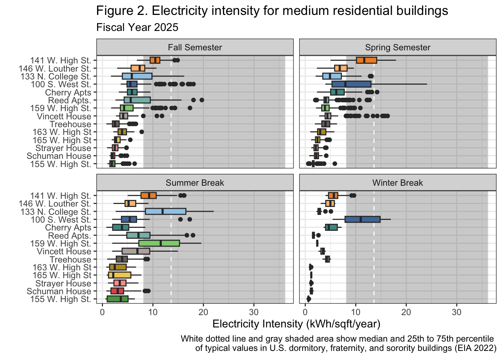

Medium Residential Buildings
Liam Glackin and Charlotte Durietz Bourdain
03/30/26
Last updated: 2026-03-30
Checks: 7 0
Knit directory: dickinson_power/
This reproducible R Markdown analysis was created with workflowr (version 1.7.2). The Checks tab describes the reproducibility checks that were applied when the results were created. The Past versions tab lists the development history.
Great! Since the R Markdown file has been committed to the Git repository, you know the exact version of the code that produced these results.
Great job! The global environment was empty. Objects defined in the global environment can affect the analysis in your R Markdown file in unknown ways. For reproduciblity it’s best to always run the code in an empty environment.
The command set.seed(20260107) was run prior to running
the code in the R Markdown file. Setting a seed ensures that any results
that rely on randomness, e.g. subsampling or permutations, are
reproducible.
Great job! Recording the operating system, R version, and package versions is critical for reproducibility.
Nice! There were no cached chunks for this analysis, so you can be confident that you successfully produced the results during this run.
Great job! Using relative paths to the files within your workflowr project makes it easier to run your code on other machines.
Great! You are using Git for version control. Tracking code development and connecting the code version to the results is critical for reproducibility.
The results in this page were generated with repository version f8eac05. See the Past versions tab to see a history of the changes made to the R Markdown and HTML files.
Note that you need to be careful to ensure that all relevant files for
the analysis have been committed to Git prior to generating the results
(you can use wflow_publish or
wflow_git_commit). workflowr only checks the R Markdown
file, but you know if there are other scripts or data files that it
depends on. Below is the status of the Git repository when the results
were generated:
Ignored files:
Ignored: .DS_Store
Ignored: .Rhistory
Ignored: .Rproj.user/
Ignored: analysis/.DS_Store
Ignored: analysis/.Rhistory
Ignored: analysis_to-fix/.DS_Store
Ignored: data/.DS_Store
Ignored: data/FY25 Main Meter Data.xlsx
Ignored: data/building_list_FY25_updated.xlsx
Ignored: data/graph_data_life_exp.csv
Ignored: data/housing_counts.csv
Ignored: keys/.DS_Store
Ignored: output/annual_kwh.csv
Ignored: output/building_check.csv
Ignored: output/building_check.xlsx
Ignored: output/daily_kwh.csv
Ignored: output/kwh_academic_2026-03-16.csv
Ignored: output/kwh_academic_2026-03-17.csv
Ignored: output/kwh_academic_2026-03-18.csv
Ignored: output/kwh_academic_2026-03-22.csv
Ignored: output/kwh_academic_2026-03-23.csv
Ignored: output/kwh_academic_2026-03-25.csv
Ignored: output/kwh_academic_2026-03-30.csv
Ignored: output/kwh_annual.csv
Ignored: output/kwh_annual_2026-03-04.csv
Ignored: output/kwh_annual_2026-03-12.csv
Ignored: output/kwh_annual_2026-03-16.csv
Ignored: output/kwh_annual_2026-03-17.csv
Ignored: output/kwh_annual_2026-03-18.csv
Ignored: output/kwh_annual_2026-03-22.csv
Ignored: output/kwh_annual_2026-03-23.csv
Ignored: output/kwh_annual_2026-03-25.csv
Ignored: output/kwh_annual_2026-03-30.csv
Ignored: output/kwh_annual_20260225.csv
Ignored: output/kwh_annual_20260226.csv
Ignored: output/kwh_daily.csv
Ignored: output/kwh_daily_2026-03-04.csv
Ignored: output/kwh_daily_2026-03-12.csv
Ignored: output/kwh_daily_2026-03-16.csv
Ignored: output/kwh_daily_2026-03-17.csv
Ignored: output/kwh_daily_2026-03-18.csv
Ignored: output/kwh_daily_2026-03-22.csv
Ignored: output/kwh_daily_2026-03-23.csv
Ignored: output/kwh_daily_2026-03-25.csv
Ignored: output/kwh_daily_2026-03-30.csv
Ignored: output/kwh_daily_20260225.csv
Ignored: output/kwh_daily_20260226.csv
Ignored: output/kwh_main_annual.csv
Ignored: output/kwh_main_daily.csv
Note that any generated files, e.g. HTML, png, CSS, etc., are not included in this status report because it is ok for generated content to have uncommitted changes.
These are the previous versions of the repository in which changes were
made to the R Markdown (analysis/Report_I_Medium.Rmd) and
HTML (docs/Report_I_Medium.html) files. If you’ve
configured a remote Git repository (see ?wflow_git_remote),
click on the hyperlinks in the table below to view the files as they
were in that past version.
| File | Version | Author | Date | Message |
|---|---|---|---|---|
| Rmd | 7140aff | maggiedouglas | 2026-03-30 | attempt to update website to integrate new student results |
| html | 7140aff | maggiedouglas | 2026-03-30 | attempt to update website to integrate new student results |
| Rmd | 10db689 | maggiedouglas | 2026-03-30 | change navigation bar and add student report sections |
Background
Our building category includes campus residential buildings between 2,000 and 10,000 square feet. We have analyzed 14 buildings in our category which are individually metered. In addition, there are 8 buildings on the main meter and 1 building on the Weis meter. In total, our category comprises 23 buildings and their main purpose is housing students on campus. They have a combined footprint of 64,465 square feet, while all buildings on campus with available data have a combined footprint of 2,515,620 square feet. Residential buildings on campus differ in their specific architecture, with most of our buildings being apartments and individual homes. Buildings in our category tend to have fewer residents and more floor space for each resident compared to large dormitories. The buildings in our category vary in age of construction and the ways they are heated and cooled which affect the amount of electricity they use. Our building category is very complete for the 2024-25 fiscal year, with a good amount of buildings in our category being individually metered and having data for 365 days of the year.
Electricity Use Summary
#Table 1
datatable(annual_med_table1,
rownames = FALSE,
colnames = c("Meter status","Buildings", "Days of data (%)", "Square\nfootage", "kWh", "kWh (corrected)", "kWh per\nsqft", "Cost ($)",
"CO2e\n(MT)"),
filter = "none",
class = "compact",
options = list(pageLength = 4, autoWidth = TRUE, dom = 't'),
caption = "Table 1. Total electricity use, estimated financial cost, and estimated greenhouse gas emissions of medium residential buildings")datatable(residential_m_academic_table2,
rownames = FALSE,
colnames = c("Meter","Building","Days of data (%)", "Square footage", "Occupants (AY)","kWh","kWh (corrected)", "kWh per sqft", "kWh per person", "Cost($)", "CO2e (MT)"),
filter = "none",
class = "compact",
options = list(pageLength = 14, autoWidth = TRUE, dom = 't'),
caption = "Table 2. Total electricity use, estimated financial cost, and estimated greenhouse gas emissions of medium residential buildings during the academic year 2024/2025")A typical building in our category uses about 16,000 kWh during the academic year on average, with the median skewing slightly lower at closer to 12,000 kWh. With a median of 12 occupants in each building, our typical building uses anywhere between 1,000-1,200 kWh per occupant, which translates to about 325-360 kg of CO2e and $80-100 per occupant. Our largest user overall was 141 W. High Street, while our lowest user was 155 W. High Street. Adjusting for occupancy, our highest and lowest users were 141 W. High Street and the Reed Apartments, respectively.
ggplot(med_res_daily_kwh,
aes(x = month, y = kwh, fill = NAME)) +
geom_col(position = "stack") +
facet_wrap(. ~ NAME) +
scale_fill_paletteer_d("ggthemes::Tableau_20") +
theme_bw() +
theme(legend.position = "none") +
theme(axis.text.x = element_text(angle = 90, vjust = 0.5, hjust = 1)) +
labs(x = "", y = "Electricity use (kWh)", fill = "",
title = "Figure 1. Monthly patterns in electricity use by building for \nmedium residential buildings in FY25",
)
| Version | Author | Date |
|---|---|---|
| 7140aff | maggiedouglas | 2026-03-30 |
ggplot(med_res_daily_kwh,
aes(x = reorder(NAME, kwh_sqft_year,FUN = "median"),
y = kwh_sqft_year, fill = NAME)) +
annotate("rect", xmin = -Inf, xmax = Inf, ymin = 7.4, ymax = 14.3, color = "lightgray", alpha = 0.3) +
geom_hline(yintercept = 10.3, linetype = "dashed", color = "white") +
facet_wrap(.~period) +
scale_fill_paletteer_d("ggthemes::Tableau_20") +
geom_boxplot() +
coord_flip() +
theme_bw() +
theme(legend.position = "none") +
labs(x = "", y = "Electricity Intensity (kWh/sqft/year)",
title = "Figure 2. Electricity intensity by \nbuilding for medium residential buildings in FY25.",
caption = "White dotted line and gray shaded area show median and 25th to 75th percentile \nof typical values in U.S. College and University buildings (EIA 2022)")
| Version | Author | Date |
|---|---|---|
| 7140aff | maggiedouglas | 2026-03-30 |
The buildings in our category tend to be below the median of a similar building in the US with some exceptions such as 141 W High St and occasional 100 S West St. These building usually follow a similar pattern in each season with higher electricity use in the summer season and lower use in the winter break.
Discussion
Although the data for the medium residential building category is very complete, a significant portion of medium residential buildings are not individually metered and therefore cannot be analyzed. With the data for these buildings, a more complete understanding of how medium residential buildings differ in their electricity use could be attained. We recommend that Dickinson prioritize adding individual meters for buildings which don’t have any in order to better assess their consumption. However, from the data that is currently available, we can tell that most of the buildings fall below typical electricity use for similar buildings in the US, indicating that Dickinson is doing good in this category at keeping electricity use low (EIA, 2022). The buildings seem to be functioning in an electricity efficient way, but seasonal patterns which show a peak in the warmer months for most buildings show that many use the most electricity in a season where there are not many students, which may be an area to focus on improving.
141 W High St is a building that stands out in this category for its unusually high electricity use. According to Lindsey Lyons, this building is also used for non-Dickinson companies which operate out of part of the building. We recommend that Dickinson investigate further whether their electricity use is being calculated into the college’s and may be skewing the data. Buildings that are working efficiently and may serve as models for how electricity use can be lowered for this category are 155 W High St and Schuman house. These are the two most efficient buildings in the category. For this category, there does not seem to be a common step that can be taken to drastically reduce electricity use, rather, it seems more productive to get to the root of breaks in the typical pattern for specific buildings in order to address what may be causing them to consume more electricity. For this, we recommend not only looking into 141 W High St, as previously stated, but also 100 S West St which shows a drastic difference from other buildings in electricity use during colder months, especially winter break when there are little students on campus.
Sources
EIA. “Energy Information Administration (EIA)- Commercial Buildings Energy Consumption Survey (CBECS).” Eia.gov, 2016, www.eia.gov/consumption/commercial/.
Leary, Neil. Dickinson College Greenhouse Gas Inventory, 2008 – 2023. 9 Dec. 2025.
Partner Contributions
Liam Glackin wrote the background portion of this report and created Figure 1 and Table 2. He also Prepared the academic year data for use. Charlotte Durietz Bourdain wrote the discussion portion of this report and prepared the annual and daily data, as well as the references. She also created Table 1 and Figure 2. Overall, both partners helped each other troubleshoot issues in code and understanding the data.
sessionInfo()R version 4.5.2 (2025-10-31)
Platform: x86_64-apple-darwin20
Running under: macOS Ventura 13.7.8
Matrix products: default
BLAS: /Library/Frameworks/R.framework/Versions/4.5-x86_64/Resources/lib/libRblas.0.dylib
LAPACK: /Library/Frameworks/R.framework/Versions/4.5-x86_64/Resources/lib/libRlapack.dylib; LAPACK version 3.12.1
locale:
[1] en_US.UTF-8/en_US.UTF-8/en_US.UTF-8/C/en_US.UTF-8/en_US.UTF-8
time zone: America/New_York
tzcode source: internal
attached base packages:
[1] stats graphics grDevices utils datasets methods base
other attached packages:
[1] paletteer_1.7.0 DT_0.34.0 lubridate_1.9.5 forcats_1.0.1
[5] stringr_1.6.0 dplyr_1.2.0 purrr_1.2.1 readr_2.2.0
[9] tidyr_1.3.2 tibble_3.3.1 ggplot2_4.0.2 tidyverse_2.0.0
[13] workflowr_1.7.2
loaded via a namespace (and not attached):
[1] sass_0.4.10 generics_0.1.4 prismatic_1.1.2 stringi_1.8.7
[5] hms_1.1.4 digest_0.6.39 magrittr_2.0.4 timechange_0.4.0
[9] evaluate_1.0.5 grid_4.5.2 RColorBrewer_1.1-3 fastmap_1.2.0
[13] rprojroot_2.1.1 jsonlite_2.0.0 processx_3.8.6 whisker_0.4.1
[17] rematch2_2.1.2 ps_1.9.1 promises_1.5.0 httr_1.4.8
[21] crosstalk_1.2.2 scales_1.4.0 jquerylib_0.1.4 cli_3.6.5
[25] rlang_1.1.7 withr_3.0.2 cachem_1.1.0 yaml_2.3.12
[29] otel_0.2.0 tools_4.5.2 tzdb_0.5.0 httpuv_1.6.16
[33] vctrs_0.7.1 R6_2.6.1 lifecycle_1.0.5 git2r_0.36.2
[37] htmlwidgets_1.6.4 fs_1.6.7 pkgconfig_2.0.3 callr_3.7.6
[41] pillar_1.11.1 bslib_0.10.0 later_1.4.8 gtable_0.3.6
[45] glue_1.8.0 Rcpp_1.1.1 xfun_0.56 tidyselect_1.2.1
[49] rstudioapi_0.18.0 knitr_1.51 farver_2.1.2 htmltools_0.5.9
[53] labeling_0.4.3 rmarkdown_2.30 compiler_4.5.2 getPass_0.2-4
[57] S7_0.2.1